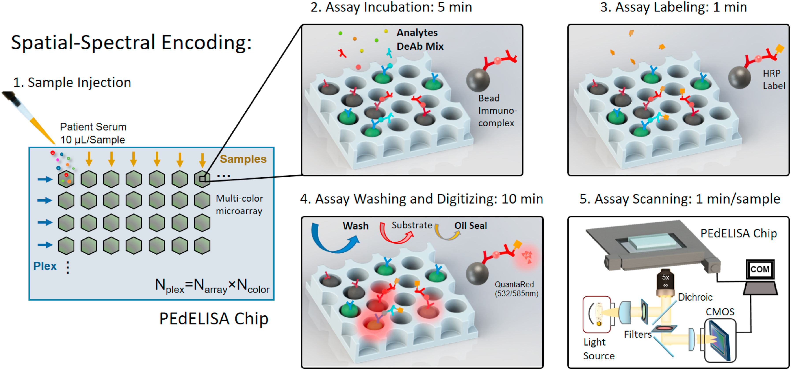
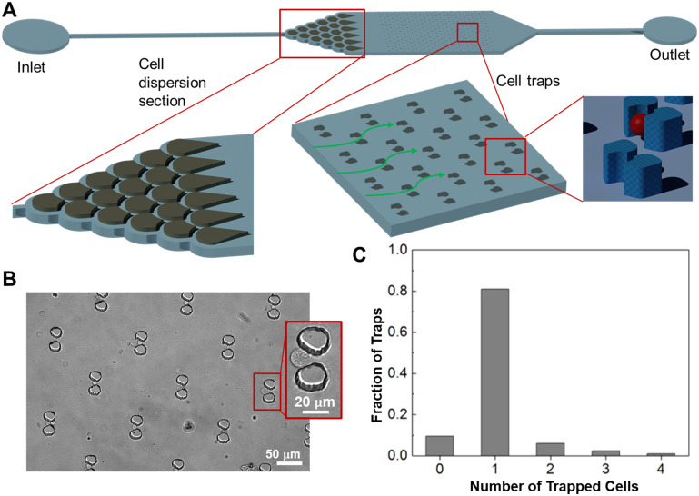

Machine learning for digital immunoassays
Machine learning analyzes images from a multiplexed digital cytokine immunoassay.
Machine learning-based cytokine microarray digital immunoassay analysis · Paper ↗

Molecular measurements, assay image analysis and biological microfluidics.
Machine learning analyzes images from a multiplexed digital cytokine immunoassay.
Machine learning-based cytokine microarray digital immunoassay analysis · Paper ↗

A microfluidic chamber traps fixed cells for fluorescent BAX mRNA measurement. The study compares molecular-beacon measurements with RT-qPCR for radiation biodosimetry.
Microfluidic measurement of intracellular mRNA with a molecular beacon probe towards point-of-care radiation triage · Paper ↗

Ongoing work on giant unilamellar vesicle (GUV) generation, mother-machine structures and droplet-based biocatalyst screening.